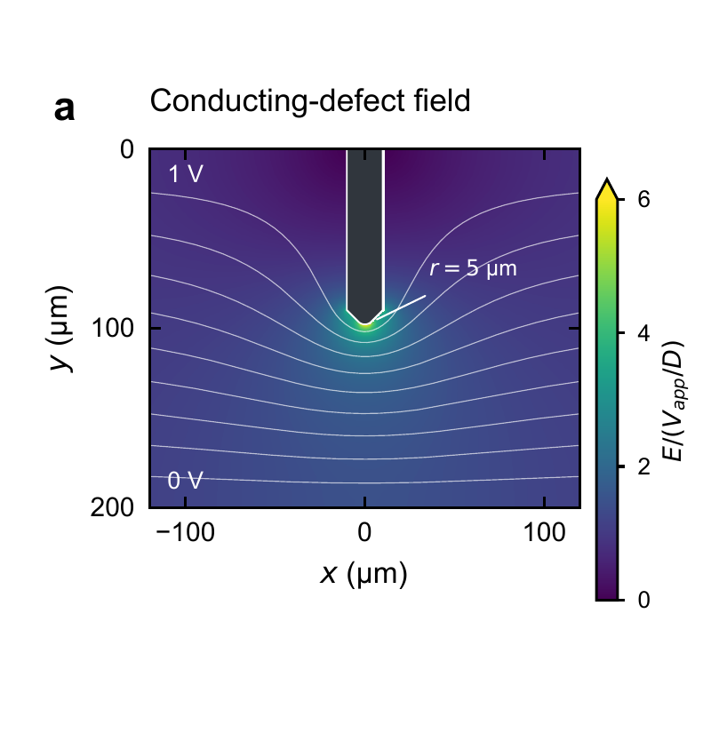

Electrical Failure and Defect Tolerance
Connecting energetic theories of electrical failure with controlled defects, reproducible fabrication and measurements of material response.
Read the projectResearch portfolio
My work spans physical systems and computational neuroscience. Across these projects, I have developed models, implemented simulations, designed experiments and worked with collaborators to examine what the evidence can support.
The projects below distinguish my completed earlier work, ongoing doctoral research and research-assistant contributions. My proposed directions in neuroscience and AI are described separately in Research interests.

Connecting energetic theories of electrical failure with controlled defects, reproducible fabrication and measurements of material response.
Read the project
A MATLAB tool for studying how temperature, noise and stimulus intensity affect information and energy measures in a conductance-based cortical neuron model.
Read the projectA self-initiated modelling project comparing candidate explanations of AQP4-associated potassium dynamics through coupled ODE–PDE simulations.
Read the project
Investigating how composition, preparation history and loading conditions shape the response of polymer networks.
Read the projectVolunteer research assistance evaluating model-generated responses and reviewing measures of cultural orientation.
Read the projectCurrent doctoral manuscripts are described with their research projects above.